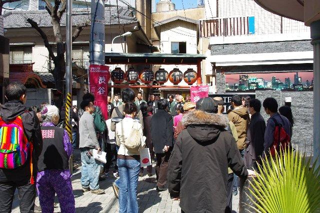

活動内容
定期的な活動としては、主に以下の四つの活動を行っております。詳しくは各活動の紹介ページをご覧ください。また最新の活動予定については、 神社研ブログ や twitter: @jinjaken をご覧ください。
勉強部会

神社や神道を学術的に研究する部会です。基礎的学習から発展的研究まで、神社や神道を学問的に研究し、議論したいという人にお勧めです。神社・神道に限らず、広く宗教文化について知りたい、語り合いたいという人も歓迎です。
勉強部会（神社・神道の勉強）
探訪部会

神社仏閣や名所旧跡および祭りや縁日などを訪れ、楽しみ、かつ学術的研究を行う部会です。「遊びに行く」感覚での参加から、「研究に行く」気概での参加まで。いろんな場所へ実際に足を運んで見てみたいという人にお勧めです。
探訪部会（神社・仏閣の探訪）
雅楽部会

雅楽の鑑賞や実践練習を行う部会です。笙や龍笛、篳篥をはじめ雅楽で使われる楽器を実際に練習したり、演奏会を聞きに行ったり、雅楽のやんごとない音色に魅せられたり新しく楽器をやってみたいという人にお勧めです。
雅楽部会（雅楽の演奏）
神楽部会

神楽の鑑賞や実践練習を行う部会です。実際に神楽の練習をしたり、神楽舞の実演を見に行ったりします。伝統芸能に興味のある人や体を動かしたい人にお勧めです。
神楽部会（神楽の演舞）
その他
今年度からは本格的に怪異部会（妖怪等の勉強や古事記の講読）の活動を行うことを予定しています（毎週金曜日）。
中心となる活動のほかにも、不定期に民俗探訪も行っています。また過去には、和歌を読むイベントを開いたり、和服を着て街を歩くイベントを行ったりしました。学園祭への参加や会誌発行、合宿なども行っています。ほかのサークルでは経験できないこととして、神社へのお手伝いをすることもあります。ほかにも博物館・美術館へ展覧会を見に行ったり、映画を見に行ったり、神楽雅楽の演奏会などを見に行ったりしています
参加するにあたって
* 東京大学神社・神道研究会においては全ての活動が自由参加です。
* 現在行われていない活動でも、会員の意志に応じて自由に行えます。
* やる気や力の入れ具合に応じて自由に活動頻度を決められます。
* 自分の興味のある活動だけを選んで参加することができます。
関心がある方へ
「ほかの事は分からないけれども、この活動に興味がある」と思えば、ぜひ見学に来てください。連絡は jinzyaken★gmail.com（★を@に変えてお送りください）もしくは@jinjakenまで。メンバー募集 のページもご参照ください。